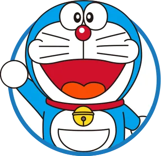
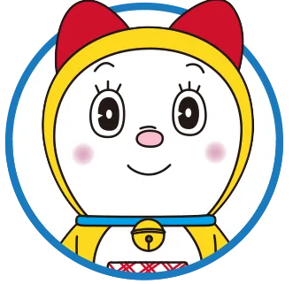
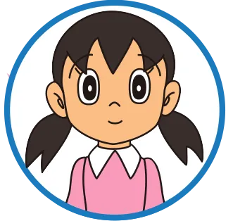
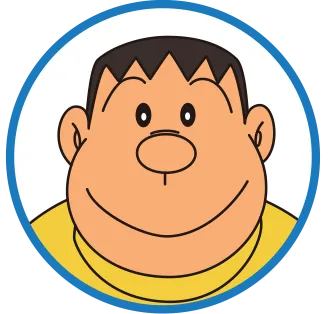

10岁大的小学生，运动和念书都不在行，不论做什么事都会失败，虽然是个很喜欢睡午觉的懒惰虫， 却是个善解人意、心地善良的小男生。最擅长翻花绳与射击。

大雄的同班同学，是个可爱的小女生。既优秀，功课又好。因为非常爱干净，所以很喜欢洗澡。 最喜欢的食物是烤地瓜。宠物是有金丝雀“小皮”和小狗“波吉”。很受大家的欢迎，不过将来的 结婚对象还是选择大雄。

大雄的同班同学，大家都叫他胖虎。虽然是个粗暴的孩子王，不过很重视友情。在学校里总是耀武扬威， 一回到家里却对妈妈没有丝毫抵抗能力，对妹妹小珠则是疼爱有加。宠物是只名叫“木克”的狗。梦想是 成为歌星，但他可怕的歌声却是大家的噩梦。

大雄的同班同学，常常炫耀家里很有钱。善长阿谀奉承，却对自己的身高太矮小感到苦恼。 有个弟弟叫阿哲，目前住在美国纽约。饲养了两只暹罗猫“奇鲁奇鲁”和“安娜”。喜欢追求 流行，兴趣相当多样。收藏品也很丰富呢。